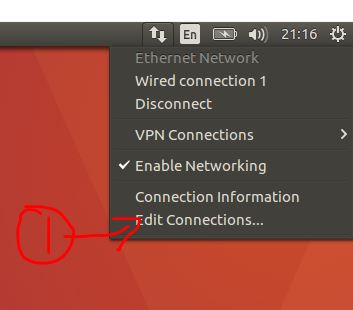
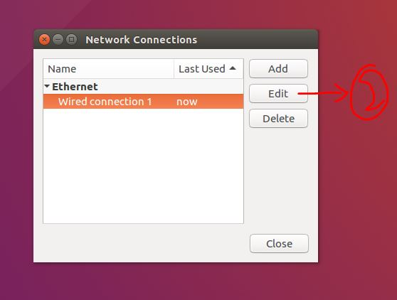
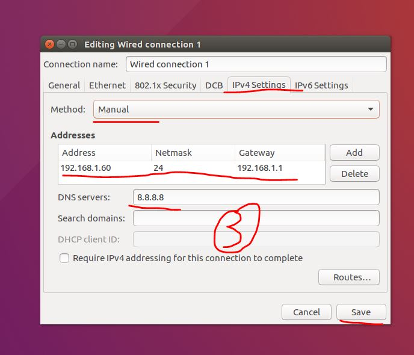
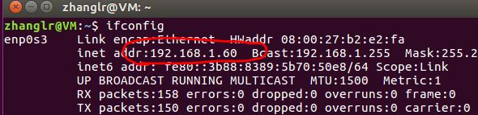
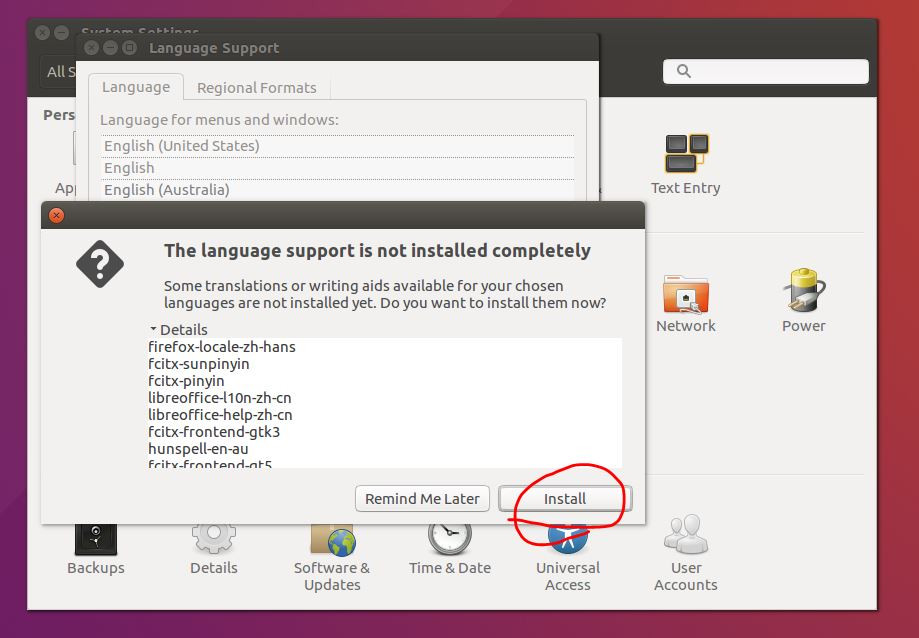
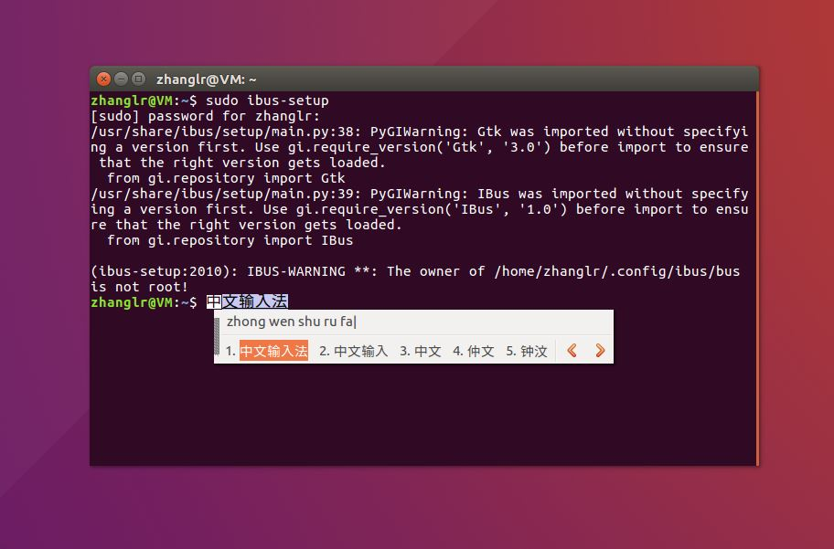
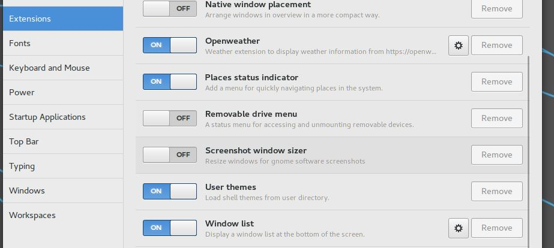
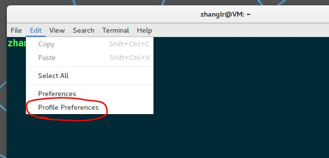

静态IP配置
- 
- 
- 
- 重启 reboot
- 重启后ifconfig验证结果
vi/vim配置
默认的vim是没有的，只能用vi，但是默认的vi会出现backspace无效，上下左右键乱码等问题，干脆直接上vim。
1 | sudo apt-get remove vim-common |
换国内源（阿里源）
这步一定要在后面安装软件或依赖前做，磨刀不误砍柴工。
https://www.jianshu.com/p/10ed332caf07
备份source.list→修改source.list→sudo apt update
中文输出法
先安装中文语言支持。system→language support
安装ibus-pinyin
https://blog.csdn.net/qq_39907831/article/details/78772093
注意两次重启的时间，第一次是文中提到的启动ibus框架前，第二次是ibus-setup加入中文找不到中文选项时。
GNOME3桌面环境搭建
1 | sudo apt-get install ubuntu-gnome-desktop |
一定要选择gdm3,完事后重启。
如果壁纸只能显示为黑色，则：
1 | gsettings set org.gnome.settings-daemon.plugins.background active true |
显示正常后删除unity，不然由于不兼容会不能完全展现gnome的美和功能。
1 | sudo apt-get remove unity |
Tweak Tool配置
- 按super键（windows键），在搜索框搜索tweak tool
- 在desktop栏允许icons on desktop
- 在extensions栏允许以下实用功能
Terminal配置
rar压缩与解压
ubuntu自带解压zip,tar.xz,gz等开源压缩格式，但不自带解压私有压缩算法rar的功能。
1 | sudo apt install rar |
rar包自带rar和unrar功能，不用装unrar。
1 | rar a test.rar a.c b.c c.c #压缩 |
蓝灯
https://kangxiaoning.github.io/2016/10/22/ubuntu-install-lantern/
远程ssh
1 | sudo apt-get install -y ssh |
完事后直接用mobaxterm新建session，使用ssh访问刚固定过的ip即可。
百度网盘(16.04不行，18.04可)
http://pan.baidu.com/download下载64位deb包，然后直接安装即可。
1 | sudo dpkg -i <baidu.....deb> |